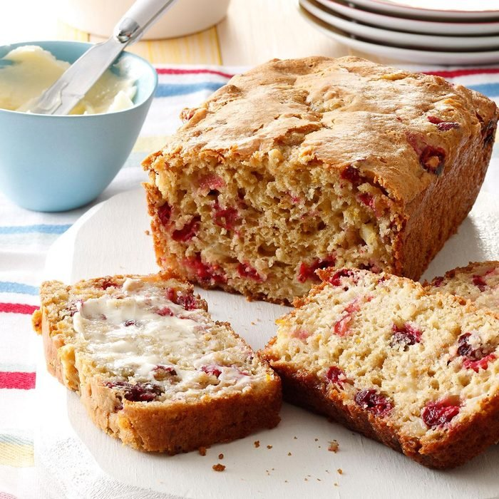

Cranberry Orange Nut Bread

Description
Delicious cranberry orange bread!
With chopped cranberries, walnuts, and orange zest.
Perfect for the holidays.
Ingredients
- 2 cups flour
- 1 1/2 teaspoon baking powder
- 1/2 teaspoon baking soda
- 1/2 teaspoon salt
- 1 cup chopped fresh cranberries
- 3/4 cup coarsely chopped walnuts
- 3/4 cup orange juice
- 3/4 cup granulated sugar
- 1/4 cup butter, melted
- 1 egg, beaten
- 1 Tbsp orange zest
Steps
- Pre-heat oven to 350°F
- Whisk together the flour, baking powder, baking soda, and salt in a large bowl.
Stir in the chopped cranberries and walnuts to coat with the flour mixture.
(Coating with flour will help suspend the nuts and cranberries in the dough and keep them from sinking.)
- In a separate bowl combine the orange juice, sugar, melted butter, egg, and orange zest.
- Pour the orange juice sugar mixture into the flour nut cranberry mixture and fold until just blended.
- Transfer dough into a well buttered 8x4 or 9x5 loaf pan. Bake at 350°F for 50 to 55 minutes or until done (a tester inserted into the center comes out clean).